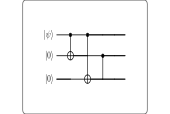

<!DOCTYPE html>
<html xmlns="http://www.w3.org/1999/xhtml">
<head>
  <meta charset="utf-8" />
  <meta name="generator" content="pandoc 3.10.2" />
  <meta name="viewport" content="width=device-width, initial-scale=1.0, user-scalable=yes" />
  <meta name="author" content="QuoNic" />
  <title>shor_code</title>
  <style>
    /* Default styles provided by pandoc.
    ** See https://pandoc.org/MANUAL.html#variables-for-html for config info.
    */
    html {
      color: #1a1a1a;
      background-color: #fdfdfd;
    }
    body {
      margin: 0 auto;
      max-width: 36em;
      padding-left: 50px;
      padding-right: 50px;
      padding-top: 50px;
      padding-bottom: 50px;
      hyphens: auto;
      overflow-wrap: break-word;
      text-rendering: optimizeLegibility;
      font-kerning: normal;
    }
    @media (max-width: 600px) {
      body {
        font-size: 0.9em;
        padding: 12px;
      }
      h1 {
        font-size: 1.8em;
      }
    }
    @media print {
      html {
        background-color: white;
      }
      body {
        background-color: transparent;
        color: black;
      }
      p, h2, h3 {
        orphans: 3;
        widows: 3;
      }
      h2, h3, h4 {
        page-break-after: avoid;
      }
    }
    p {
      margin: 1em 0;
    }
    a {
      color: #1a1a1a;
    }
    a:visited {
      color: #1a1a1a;
    }
    img {
      max-width: 100%;
    }
    svg {
      height: auto;
      max-width: 100%;
    }
    h1, h2, h3, h4, h5, h6 {
      margin-top: 1.4em;
    }
    h5, h6 {
      font-size: 1em;
      font-style: italic;
    }
    h6 {
      font-weight: normal;
    }
    ol, ul {
      padding-left: 1.7em;
      margin-top: 1em;
    }
    li > ol, li > ul {
      margin-top: 0;
    }
    blockquote {
      margin: 1em 0 1em 1.7em;
      padding-left: 1em;
      border-left: 2px solid #e6e6e6;
      color: #606060;
    }
    code {
      white-space: pre-wrap;
      font-family: Menlo, Monaco, Consolas, 'Lucida Console', monospace;
      font-size: 85%;
      margin: 0;
      hyphens: manual;
    }
    pre {
      margin: 1em 0;
      overflow: auto;
    }
    pre code {
      padding: 0;
      overflow: visible;
      overflow-wrap: normal;
    }
    .sourceCode {
     background-color: transparent;
     overflow: visible;
    }
    hr {
      border: none;
      border-top: 1px solid #1a1a1a;
      height: 1px;
      margin: 1em 0;
    }
    table {
      margin: 1em 0;
      border-collapse: collapse;
      width: 100%;
      overflow-x: auto;
      display: block;
      font-variant-numeric: lining-nums tabular-nums;
    }
    table caption {
      margin-bottom: 0.75em;
    }
    tbody {
      margin-top: 0.5em;
      border-top: 1px solid #1a1a1a;
      border-bottom: 1px solid #1a1a1a;
    }
    th {
      border-top: 1px solid #1a1a1a;
      padding: 0.25em 0.5em 0.25em 0.5em;
    }
    td {
      padding: 0.125em 0.5em 0.25em 0.5em;
    }
    header {
      margin-bottom: 4em;
      text-align: center;
    }
    #TOC li {
      list-style: none;
    }
    #TOC ul {
      padding-left: 1.3em;
    }
    #TOC > ul {
      padding-left: 0;
    }
    #TOC a:not(:hover) {
      text-decoration: none;
    }
    span.smallcaps{font-variant: small-caps;}
    div.columns{display: flex; gap: 1.5em;}
    div.column{flex: auto;}
    @media screen {
    div.columns{gap: min(4vw, 1.5em);}
    div.column{overflow-x: auto;}
    }
    div.hanging-indent{margin-left: 1.5em; text-indent: -1.5em;}
    /* The extra [class] is a hack that increases specificity enough to
       override a similar rule in reveal.js */
    ul.task-list[class]{list-style: none;}
    ul.task-list li input[type="checkbox"] {
      font-size: inherit;
      width: 0.8em;
      margin: 0 0.8em 0.2em -1.6em;
      vertical-align: middle;
    }
  </style>
  <script defer="" src="" type="text/javascript"></script>
</head>
<body>
<header id="title-block-header">
<h1 class="title">shor_code</h1>
<p class="author">QuoNic</p>
</header>
<div class="center">
<p><strong>Error Correction / 纠错</strong> | 难度：高级 | 预计时间：20
分钟</p>
</div>
<h1 id="为什么需要">为什么需要？</h1>
<p>Shor
码是第一个完整的量子纠错码，可以同时纠正比特翻转和相位翻转错误。</p>
<h2 id="经典局限">经典局限</h2>
<p>̱</p>
<ul>
<li><p>比特翻转码只能纠正 <span class="math inline">\(X\)</span>
错误</p></li>
<li><p>相位翻转码只能纠正 <span class="math inline">\(Z\)</span>
错误</p></li>
<li><p>实际量子系统同时存在两种错误</p></li>
</ul>
<h2 id="量子优势">量子优势</h2>
<p>̱</p>
<ul>
<li><p>Shor 码用 9 个物理量子比特编码 1 个逻辑量子比特</p></li>
<li><p>可以纠正任意单量子比特错误</p></li>
<li><p>是量子纠错的里程碑</p></li>
</ul>
<h2 id="实际应用">实际应用</h2>
<p>̱</p>
<ul>
<li><p>量子计算（通用纠错）</p></li>
<li><p>量子通信（保护量子态）</p></li>
<li><p>量子存储（延长相干时间）</p></li>
</ul>
<h1 id="快速上手">快速上手</h1>
<pre style="python"><code>from quonic.qec import shor_code

# Encode, introduce error, correct
result = shor_code(error_type=&quot;X&quot;, error_qubit=0)
print(f&quot;Original: {result.original}&quot;)
print(f&quot;Corrected: {result.corrected}&quot;)</code></pre>
<p><strong>预期输出</strong>：</p>
<pre><code>Original: |0&gt;
Corrected: |0&gt;</code></pre>
<h1 id="原理详解">原理详解</h1>
<h2 id="电路图">电路图</h2>
<div class="center">
<p></p>
</div>
<h2 id="数学推导">数学推导</h2>
<p>Shor 码将 1 个逻辑量子比特编码到 9 个物理量子比特： <span
class="math display">\[\begin{equation}
|0\rangle_L = \frac{1}{2\sqrt{2}}(|000\rangle + |111\rangle)^{\otimes 3}
\end{equation}\]</span> <span class="math display">\[\begin{equation}
|1\rangle_L = \frac{1}{2\sqrt{2}}(|000\rangle - |111\rangle)^{\otimes 3}
\end{equation}\]</span></p>
<p><strong>编码过程</strong>：</p>
<ol>
<li><p>先用相位翻转码编码（3 个块）</p></li>
<li><p>再用比特翻转码编码每个块</p></li>
</ol>
<p><strong>纠错过程</strong>：</p>
<ol>
<li><p>检测每个块内的比特翻转错误</p></li>
<li><p>检测块间的相位翻转错误</p></li>
<li><p>纠正检测到的错误</p></li>
</ol>
<h2 id="几何解释">几何解释</h2>
<p>Shor 码通过级联编码，将相位翻转码和比特翻转码组合，实现通用纠错。</p>
<h1 id="代码详解">代码详解</h1>
<pre style="python"><code>from quonic.qec import shor_code

# shor_code(error_type, error_qubit)
# error_type: &quot;X&quot;, &quot;Z&quot;, or &quot;Y&quot;
# error_qubit: which qubit has the error
result = shor_code(error_type=&quot;X&quot;, error_qubit=0)

# result.original: original state
# result.encoded: encoded state
# result.error: state after error
# result.corrected: corrected state
print(f&quot;Corrected: {result.corrected}&quot;)</code></pre>
<h1 id="进阶用法">进阶用法</h1>
<h2 id="场景-1不同错误类型">场景 1：不同错误类型</h2>
<pre style="python"><code># Different error types
for error_type in [&quot;X&quot;, &quot;Z&quot;, &quot;Y&quot;]:
    result = shor_code(error_type=error_type, error_qubit=0)
    print(f&quot;{error_type} error: {result.corrected}&quot;)</code></pre>
<h2 id="场景-2不同错误位置">场景 2：不同错误位置</h2>
<pre style="python"><code># Error on different qubits
for i in range(9):
    result = shor_code(error_type=&quot;X&quot;, error_qubit=i)
    print(f&quot;Error on q{i}: {result.corrected}&quot;)</code></pre>
<h1 id="适用场景">适用场景</h1>
<h2 id="量子计算">量子计算</h2>
<p>Shor 码是量子计算的基础纠错码。</p>
<h2 id="量子通信">量子通信</h2>
<p>Shor 码可以保护量子通信中的量子态。</p>
<h2 id="量子存储">量子存储</h2>
<p>Shor 码可以延长量子存储的相干时间。</p>
<h1 id="常见问题">常见问题</h1>
<h2 id="shor-码需要多少量子比特">Shor 码需要多少量子比特？</h2>
<p>需要 9 个物理量子比特编码 1 个逻辑量子比特。</p>
<h2 id="shor-码能纠正所有错误吗">Shor 码能纠正所有错误吗？</h2>
<p>Shor 码可以纠正任意单量子比特错误，但不能纠正多量子比特错误。</p>
<h2 id="shor-码和表面码有什么区别">Shor 码和表面码有什么区别？</h2>
<p>Shor 码是级联码，表面码是拓扑码。表面码有更好的容错阈值。</p>
<h1 id="学习路径">学习路径</h1>
<h2 id="前置知识">前置知识</h2>
<p>̱</p>
<ul>
<li><p>比特翻转码</p></li>
<li><p>相位翻转码</p></li>
<li><p>量子测量</p></li>
</ul>
<h2 id="继续学习">继续学习</h2>
<p>̱</p>
<ul>
<li><p>Steane 码</p></li>
<li><p>表面码</p></li>
<li><p>颜色码</p></li>
</ul>
<h1 id="完整示例代码">完整示例代码</h1>
<h2 id="示例-1基本-shor-码">示例 1：基本 Shor 码</h2>
<pre style="python"><code>from quonic.qec import shor_code

result = shor_code(error_type=&quot;X&quot;, error_qubit=0)
print(f&quot;Corrected: {result.corrected}&quot;)</code></pre>
<h1 id="下载">下载</h1>
<p></p>
<ul>
<li><p>(https://github.com/ChrisLee0721/QuoNic/blob/main/examples/shor_code/shor_code.py)</p></li>
</ul>
</body>
</html>
